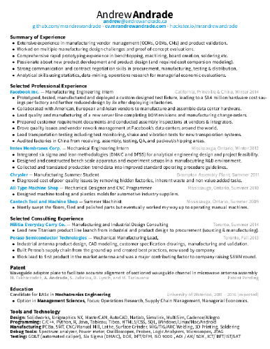
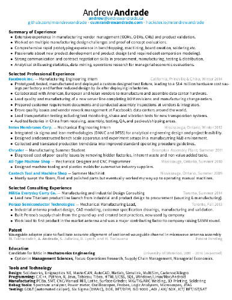

Andrew Andrade's Résumés
The résumés of Andrew Andrade.
Manufacturing Resume

Based on alykhank/resume
Project/Product Management Resume
Based on mjresume
Data Science Resume
Based on deedy-resume
The résumés of Andrew Andrade.

Based on alykhank/resume
Based on mjresume
Based on deedy-resume